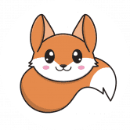
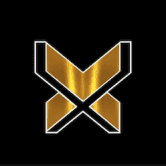
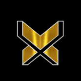
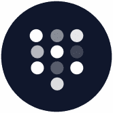
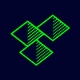
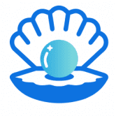
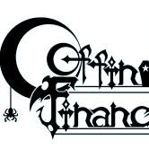
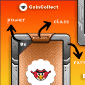
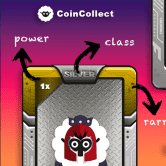

 FarmersOnlyFi FarmersOnly 在 Harmony 上拥有第一个自动复合保险库！我们有 ViperSwap、SushiSwap、Fuzz.fi 和 PiggyBank 的保险库，而且还会有更多！ 我们是 Harmony 上的第一
FarmHero FarmHero 来到多边形！ 该协议具有独特的 NFT 系列、NFT 农业、收益农业和 2 个内部游戏：拍卖和 fomo。未来，协议中会有更多的功能加入，更有趣！ FarmHero 是一种融
 FATExDAO FATExDAO 是一个 100% 由会员经营的亲人类（ESG、多样性、社会责任、营利性企业）。 DAO 的 web 3.0 Dapp FATExDEX 目前已上线（请访问 FATEx.io - 请花点时间熟悉登录页面上的详细信息）
 FATExFi FATExDAO 是在治理代币 FATE & FATExFi 下形成的 ESG/CSR 金融科技 DAO，基础层 DOA 治理 dApp： FATExFi 重新格式化了传统的“dex”流动性池、排放奖励模型（通过一些重要的调整
 Feeder Finance Feeder Finance 通过简化的用户体验、独特的多样化保险库和多链保险库聚合重新构想了 DeFi 之旅——少想，赚更多。 Feeder Finance 平台将具有独特的简化用户体验，将在无数平台上
Ferrum Network Ferrum Network 是开创互操作性 2.0 时代的先行者。 Ferrum Network 的主网节点和相关基础设施由 Quantum Portal 提供支持，将为行业中的每条链带来价值、数据和功能互操作性。利用 Ferrum 网络，任
 Lodge Swap The Lodge ( $LODGE )，它是一个新的辉煌和创新的协议。 LODGE 是由社区驱动的公平发布。我们的计划侧重于我们的三重方法：社区、产品和生态系统。 该团队正在孜孜不倦
 Clam Island 什么是 Clam Island？ Clam Island 将区块链投资游戏化在 3D 岛上，游戏中的角色支持用户完成整个 NFT 和 DeFi 投资流程让 DeFi 变得简单、有趣和有效。该平台引入了 Play-to-Invest 模型
 Coffin Finance Coffin Finance 将成为 Fantom Opera 上第一个去中心化、资本高效且部分抵押的稳定币协议。 农场质押您的 LP 代币以获得 COFIN 奖励。目前，我们仅支持在 SpookySwap 上创建的 LP 代币。我们也在
Coinbidex Coinbidex 将 建立自己的区块链和交易所 COINBIDEX 链如果您在 COINBIDEX 链上构建您的 DAPP，您将获得 50% 的 GAS 费奖励Coinbdex 将以最低的费用构建最快的区块
 CoinCollect Bronze NFT CoinCollect NFT 可抵押、可交易，并为其所有者提供特殊礼物。 拿起您的 NFT 并开始收集新硬币、空投新硬币或出售/交易您的 NFT。 CoinCollect 是一种在多链上运行的去中心化 NFT
 CoinCollect Silver NFT CoinCollect Silver NFT 是中等强大的实用 NFT，具有青铜 NFT 的所有功能，并且比 Starter NFT 强大 15 倍。 白银 NFT 从矿池和空投中获得的收益超过青铜 NFT。 它在白名单上也有更多机
Conic Conic Finance 是一个易于使用的平台，可让流动性提供者分散对多个 Curve 池的风险敞口。 Omnipools 为 Conic 提供了便利，Omnipools 将流动性分配给多个 Curve 池中的一项资产。
Convex Finance Convex 允许 Curve.fi 流动性提供者在不锁定 CRV 的情况下赚取交易费用并声称提升 CRV 。 流动性提供者可以轻松获得提升的CRV和流动性挖掘奖励。 如果您想质押 CRV，C
CosmicSwap 介绍CosmicSwap 是一个收益农场和聚合器，目前位于币安智能链和 Polygon 网络上。 CosmicSwap 允许您质押您的代币并获得 $COSMIC 作为奖励。 它是由一组开发人员设计和
Cosmo Swap 通过每天耕种获得 CCLP CCLP 是 MetaCosmo 生态系统的内部代币。 在耕种 CCLP 时，你将这些代币和 USDT 暂时发送到一个特殊的智能合约中，并以新的 CCLP 代币的形式获得奖励。 通过此
Cougar Vault CougarSwap Vault - Cougar 生态系统的一部分 - 为重视可持续代币经济学、安全性和谨慎风险管理的长期投资者设计的单产农业优化器。 CougarSwap Vault 专注于复利的力量，节省用户时间，
Counterstake Counterstake 是连接 Obyte、以太坊、BSC 和 Polygon 的完全去中心化的跨链桥。 在几分钟内在网络之间转移代币以享受更低的费用并使用其他网络上可用的 dapp。 该
Croge CrogeCoin 是在团队认识到 Cronos 社区是受人尊敬和专业的，但缺少一件事时创建的； 炒作。 CrogeCoin 旨在将 meme 硬币的炒作和乐趣带入 Cronos 链。 该团队着手在一个对他们来说完全陌生
CronaSwap CronaSwap 是 Cronos 链上第一个提供最低交易费用 (0.25%) 的去中心化交易平台。 您可以在 Cronos Chain 网络上轻松交换 CRC-20 代币，保证卓越的速度和更低的网络交易成本。 CronaSwap 旨在成为 DEX 平台
Cross Pool Cross Pool 是 Hot Cross 产品套件的成员，该产品套件提供了一种安全且去中心化的方式来奖励用户质押 LP 代币和单面传统 BEP20 代币。 该协议在技术上适用于各种 Staking 场景和任何
Darkside Finance Darkside Finance 是唯一真正由用户拥有的收益农场。所有矿池和农场都会产生两个代币！ CZDIAMOND 是一种所有权代币，质押者获得所有存款费用的 75% 和所有其他平台收入的 50% 作为
Datamine Datamine Network 是一个新的非托管和去中心化开源经济系统，它使用智能合约来创建自适应货币。我们的双代币 DeFi 协议每 15 秒产生一次红利。 由燃烧证明支持的加密货币 Datamine
Death 死亡是桑德曼金融的最后一层。 DEATH 是一种带有 Anti-Bot 系统的单产农业，具有自动复合功能的 Vaults 和具有 Max-Supply 的多层，NFT Farming，NFT Battles 和 Gambling 如果您正在寻
DeeDee's Room - DXL Finance DeeDee 的房间是 DexterLab 分层 dapp 的第二层。它为我们的第一层带来了许多新功能。目前我们包括诸如收获税、APR 提升、反鲸鱼等功能。 DexterLab 是 2.0 分层农业解决方案，它在
DeFiHelper DeFiHelper 是一种非托管投资助手，可帮助任何规模的投资者轻松管理和自动化其跨 500 种协议的 DeFi 投资。 建立和赚取 对于 DFH 来说，快速行动至关重要——添加新功能、连
DeFiner DeFiner 的下一代产品 DeFiner2.0 通过创建 100% 无许可借贷协议成功解决了这一借贷问题。在 DeFiner 2.0 中，任何人都可以使用他们选择的任何代币或数字资产来创建自己的借贷池。 每
BakedBuns.Farm Cronos 链上的去中心化面包店在 $CRO 中产生 6% 的每日投资回报率 几乎每个人都渴望通过可持续的+高产农业来投入一些诚实的钱，这就是我们在 CRONOS 厨房背
Balance Network 将创建 BLN 作为 Balance Network 平台的货币，并执行一些行动，例如奖励社区和投资 Balance Network 生态系统。 将创建 300.000.000 BLN 代币将用作 Balance Network 平台 NFT 生态系统中的实用程序，既作为原生协
BambooDeFi BambooDeFi 现在是 Binance 智能链 的一部分，在 PancackeSwap 平台上运行并允许 Bamboo 代币持有者转换其 ERC-20通过在 ETH 部分的 www.BambooDeFi.com 上部署和访问的网桥连接到 BEP-20。 经过Red
BarnBridge Barnbridge 是一个想法 & 白皮书最初是在 2019 年第二季度构思的。当时，MakerDAO 开始获得主流意识，并激发了现在被称为 DeFi 或去中心化金融社区的想象力。 一年